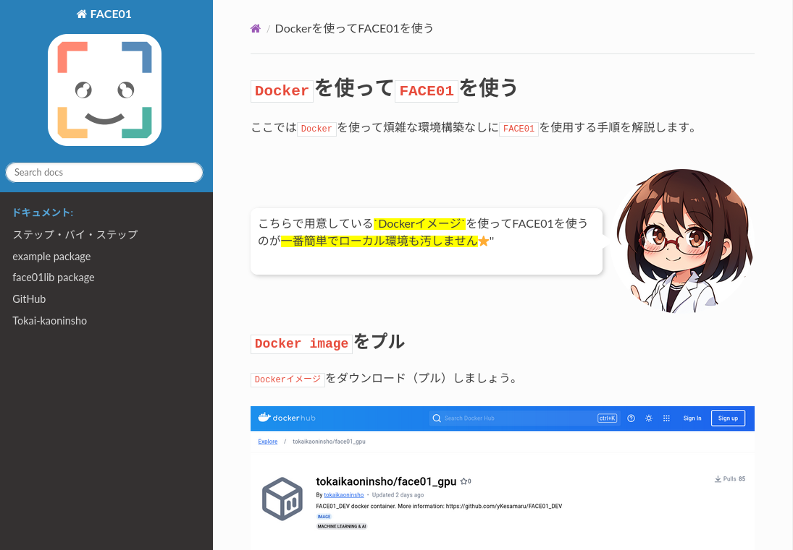

はじめに
顔画像データセットを作成する際、一般的にはクローリングによって作成するかと思います。 この方法だとデータのクリーニングが大変です。
- 自撮り加工が大変多い
- 関連した別人が混ざる
- 年齢差が大きすぎるデータが混ざる
- ぼやけている
これらを最終的には目視で行わなければなりません。
JAPANESE FACE V1[1]を作製した時は、最終チェックはすべて目視で行いました。
これとは異なる方法として、インタビューなどの動画から顔画像データを抽出する方法も存在します。 人数をかせぐことは出来ませんが、上記のデメリットはすべて解消されます。
この記事では後者の「インタビューなどの動画から顔画像データを抽出する方法」について、FACE01[2]を使って行います。

環境
$ inxi -Sxxx --filter
System:
Kernel: 6.8.0-47-generic x86_64 bits: 64 compiler: N/A Desktop: GNOME 42.9
tk: GTK 3.24.33 wm: gnome-shell dm: GDM3 42.0
Distro: Ubuntu 22.04.5 LTS (Jammy Jellyfish)
環境構築
Python仮想環境構築
terms@terms:~/ドキュメント/Face_Extraction$ python3 -m venv ./venv
terms@terms:~/ドキュメント/Face_Extraction$ . venv/bin/activate
(venv) terms@terms:~/ドキュメント/Face_Extraction$ pip install -U pip wheel setuptools
Requirement already satisfied: pip in ./venv/lib/python3.10/site-packages (22.0.2)
Collecting pip
Using cached pip-24.2-py3-none-any.whl (1.8 MB)
Collecting wheel
Using cached wheel-0.44.0-py3-none-any.whl (67 kB)
Requirement already satisfied: setuptools in ./venv/lib/python3.10/site-packages (59.6.0)
Collecting setuptools
Downloading setuptools-75.2.0-py3-none-any.whl (1.2 MB)
━━━━━━━━━━━━━━━━━━━━━━━━━━━━━━━━━━━━━━━━ 1.2/1.2 MB 8.3 MB/s eta 0:00:00
Installing collected packages: wheel, setuptools, pip
Attempting uninstall: setuptools
Found existing installation: setuptools 59.6.0
Uninstalling setuptools-59.6.0:
Successfully uninstalled setuptools-59.6.0
Attempting uninstall: pip
Found existing installation: pip 22.0.2
Uninstalling pip-22.0.2:
Successfully uninstalled pip-22.0.2
Successfully installed pip-24.2 setuptools-75.2.0 wheel-0.44.0
(venv) terms@terms:~/ドキュメント/Face_Extraction$
FACE01をDOCKERで導入
下記に書いてあるとおりにDocker imageをプルする。

docker pull tokaikaoninsho/face01_gpu
確認。ここでは予めダウンロードしておいたDocker imageがリストされています。
$ docker images
REPOSITORY TAG IMAGE ID CREATED SIZE
tokaikaoninsho/face01_gpu 3.0.03_3 ce2952ad62d6 2 months ago 22.3GB
ドキュメントにあるように、GUIを使えるようにしておく。
xhost +local:
この部分がよくわからない方は以下を参考にしてください。
DockerでGUIアプリケーションを開く基本的な押さえどころ
https://zenn.dev/ykesamaru/articles/add7d844f56516
永続化のためのフォルダを指定しておきたいので、以下のようにしてコンテナを起動します。
docker run -it \
--gpus all -e DISPLAY=$DISPLAY \
-v /tmp/.X11-unix:/tmp/.X11-unix \
-v /path/to/host/folder:/path/to/container/folder \
<image id>

以下はドキュメントに実際描かれている内容の転載です。
ここで、'/path/to/host/folder'はホスト側の永続化したいデータを保存するフォルダパスを指定し、'/path/to/container/folder'はコンテナ内でそのデータを利用するためのフォルダパスを指定します。
例えば、ホストの'/home/user/dataフォルダ'をコンテナ内の'/mnt/data'にマウントしたい場合は、以下のようになります。
docker run -it \ --gpus all -e DISPLAY=$DISPLAY \ -v /tmp/.X11-unix:/tmp/.X11-unix \ -v /home/user/data:/mnt/data \ <image id>
/home/terms/ドキュメント/Face_Extraction/assets/ディレクトリにinterview.mp4としてテスト用動画を用意してあります。
今回はこの動画ファイルから顔画像ファイルを抽出したいので、このディレクトリを指定してコンテナを起動します。
docker run -it \
--gpus all -e DISPLAY=$DISPLAY \
-v /tmp/.X11-unix:/tmp/.X11-unix \
-v /home/terms/ドキュメント/Face_Extraction/assets:/mnt/data \
ce2952ad62d6
コンテナを上記のように指定して起動すると、ホスト側の/home/terms/ドキュメント/Face_Extraction/assetsディレクトリがコンテナ側の/mnt/dataディレクトリに接続されます。
(venv) terms@terms:~/ドキュメント/Face_Extraction$ docker run -it \
--gpus all -e DISPLAY=$DISPLAY \
-v /tmp/.X11-unix:/tmp/.X11-unix \
-v /home/terms/ドキュメント/Face_Extraction/assets:/mnt/data \
ce2952ad62d6
==========
== CUDA ==
==========
CUDA Version 11.6.1
Container image Copyright (c) 2016-2023, NVIDIA CORPORATION & AFFILIATES. All rights reserved.
This container image and its contents are governed by the NVIDIA Deep Learning Container License.
By pulling and using the container, you accept the terms and conditions of this license:
https://developer.nvidia.com/ngc/nvidia-deep-learning-container-license
A copy of this license is made available in this container at /NGC-DL-CONTAINER-LICENSE for your convenience.
*************************
** DEPRECATION NOTICE! **
*************************
THIS IMAGE IS DEPRECATED and is scheduled for DELETION.
https://gitlab.com/nvidia/container-images/cuda/blob/master/doc/support-policy.md
docker@056e52013385:~/FACE01_DEV$ . bin/activate
(FACE01_DEV) docker@056e52013385:~/FACE01_DEV$ ls /mnt/data
2024-10-23-16-34-21.png 2024-10-23-16-42-37.png eye-catch.png interview.mp4
/mnt/data/interview.mp4に対して、顔画像ファイル抽出処理をしていきます。
config.iniを調整する
FACE01のDOCKERイメージにはgeditテキストエディタが付属します。vimも付属するので好きな方を選んで起動してください。
(FACE01_DEV) docker@a5f5d24d9fba:~/FACE01_DEV$ ls
Docker_INSTALL_FACE01.sh assets build docs face01lib lib noFace preset_face_images pyvenv.cfg share
SystemCheckLock bin config.ini example include lib64 output pyproject.toml requirements_dev.txt
(FACE01_DEV) docker@a5f5d24d9fba:~/FACE01_DEV$ gedit config.ini
(gedit:34): dbind-WARNING **: 19:16:54.532: Couldn't connect to accessibility bus: Failed to connect to socket /run/user/1000/at-spi/bus_1: そのようなファイルやディレクトリはありません
** (gedit:34): WARNING **: 19:16:54.880: Could not load theme icon text-x-generic: Icon 'text-x-generic' not present in theme Yaru-red

基本的にFACE01はconfig.iniファイルを編集して設定を行います。
デフォルトで幾つかのセクションが用意されています。すべてのセクションは[DEFAULT]セクションを継承します。
新しいセクションを作成するには[DEFAULT]セクションから変更する部分だけを抽出して設定してください。
くわしくはこちらをご参照ください。

今回は予め用意されている[LIGHTWEIGHT_GUI]セクションを元に内容を変更し、これを[CROP_FACES]セクションとして使用します。
[DISPLAY_GUI]
# [DISPLAY_GUI] section is example for display window.
# [DISPLAY_GUI] section inherits from the [DEFAULT] section.
headless = False
deep_learning_model = 1
similar_percentage = 90
preset_face_images_jitters = 10
min_detection_confidence = 0.8
mode = cnn
use_pipe = False
same_time_recognize = 1
movie = interview.mp4
target_rectangle = True
show_overlay = True
show_percentage = True
show_name = True
frame_skip = 2
number_of_crops = 0
コードはexample/display_GUI_window.pyを使用します。
次に、interview.mp4からとった顔画像ファイルを保存します。

これを以下のディレクトリにコピーします。
~/FACE01_DEV/preset_face_images/
コピーする際パスワードを聞かれます。パスワードはdockerです。
(FACE01_DEV) docker@a5f5d24d9fba:~/FACE01_DEV$ ls /mnt/data
2024-10-23-16-34-21.png 2024-10-23-19-17-39.png eye-catch.png interview.mp4
2024-10-23-16-42-37.png 2024-10-23-20-32-42.png face_crop.py 阿部慎之介_default.png
(FACE01_DEV) docker@a5f5d24d9fba:~/FACE01_DEV$ cp /mnt/data/阿部慎之介_default.png ~/FACE01_DEV/preset_face_images/
cp: 通常ファイル '/home/docker/FACE01_DEV/preset_face_images/阿部慎之介_default.png' を作成できません: 許可がありません
(FACE01_DEV) docker@a5f5d24d9fba:~/FACE01_DEV$ sudo !!
sudo cp /mnt/data/阿部慎之介_default.png ~/FACE01_DEV/preset_face_images/
[sudo] docker のパスワード:
(FACE01_DEV) docker@b8ddca6a1b03:~/FACE01_DEV$ python ./example/display_GUI_window.py

(FACE01_DEV) docker@b8ddca6a1b03:~/FACE01_DEV$ mv ./output/*.png /mnt/data/output/
これによって、ホスト側にクロップされた顔画像ファイルを移しました。